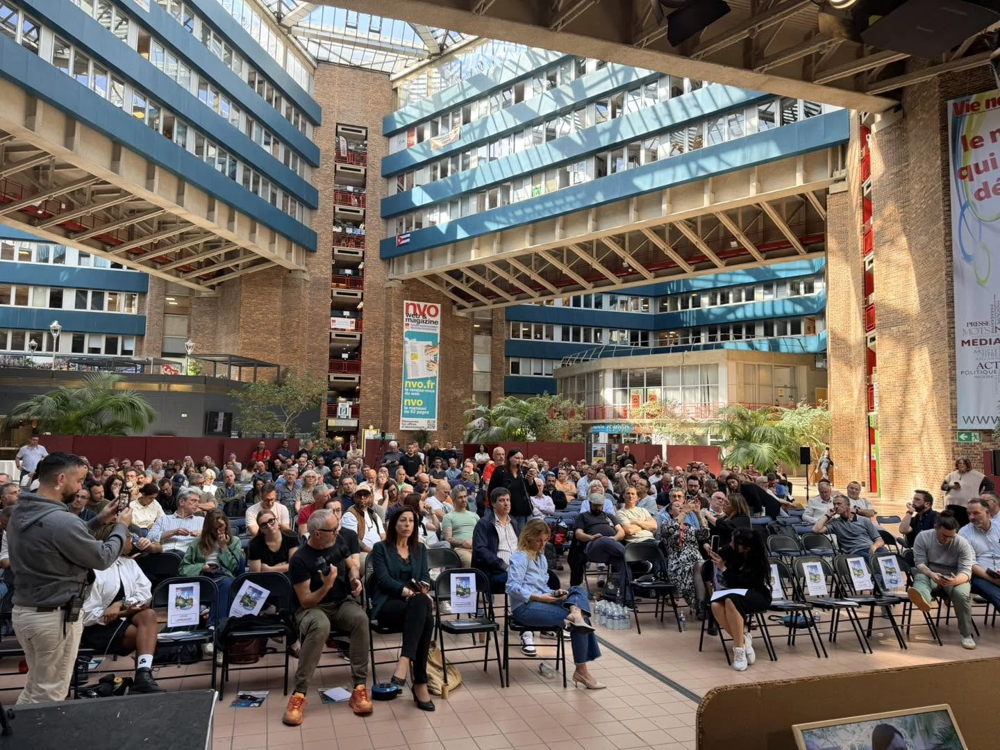
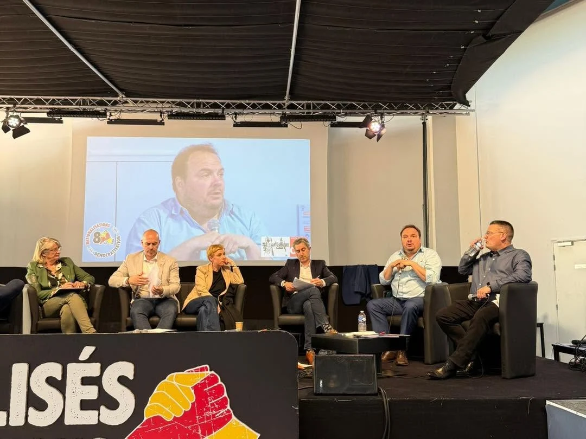
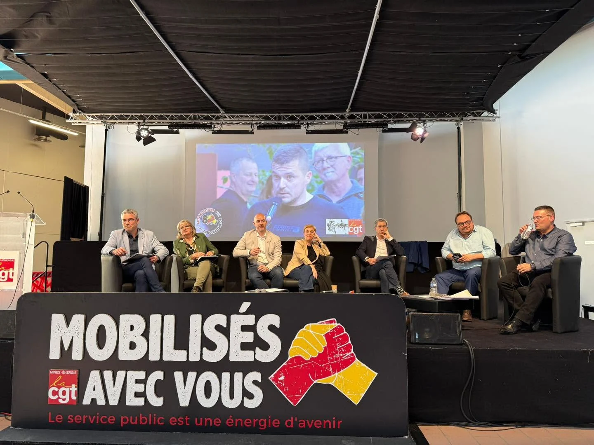
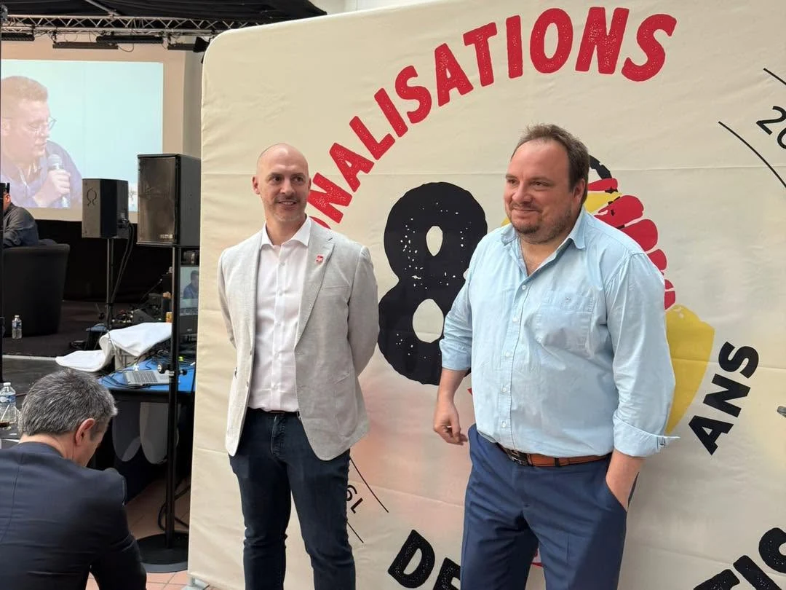
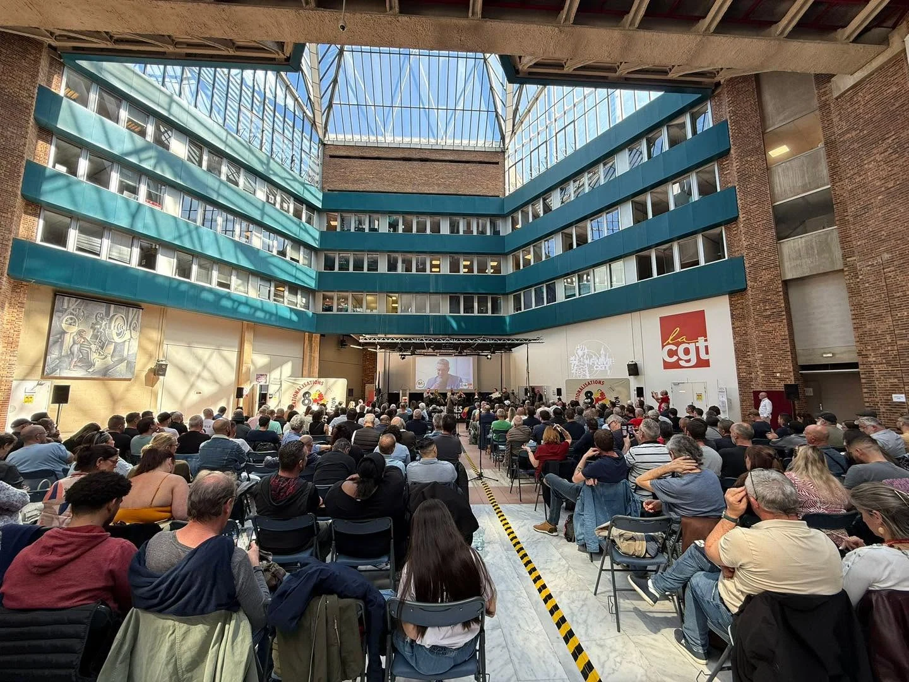
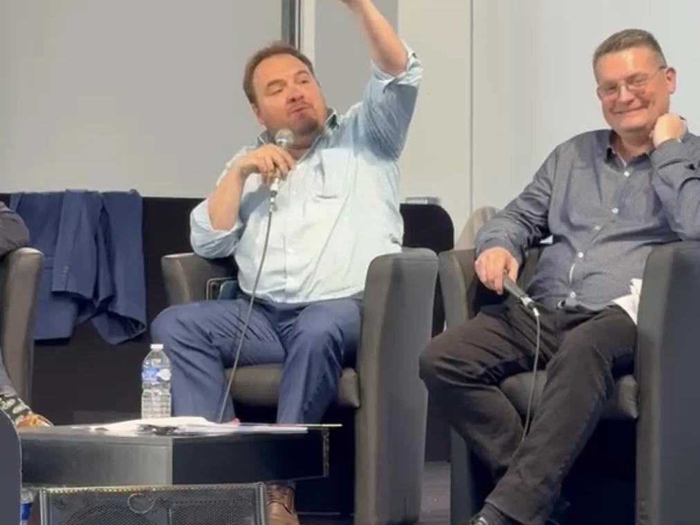
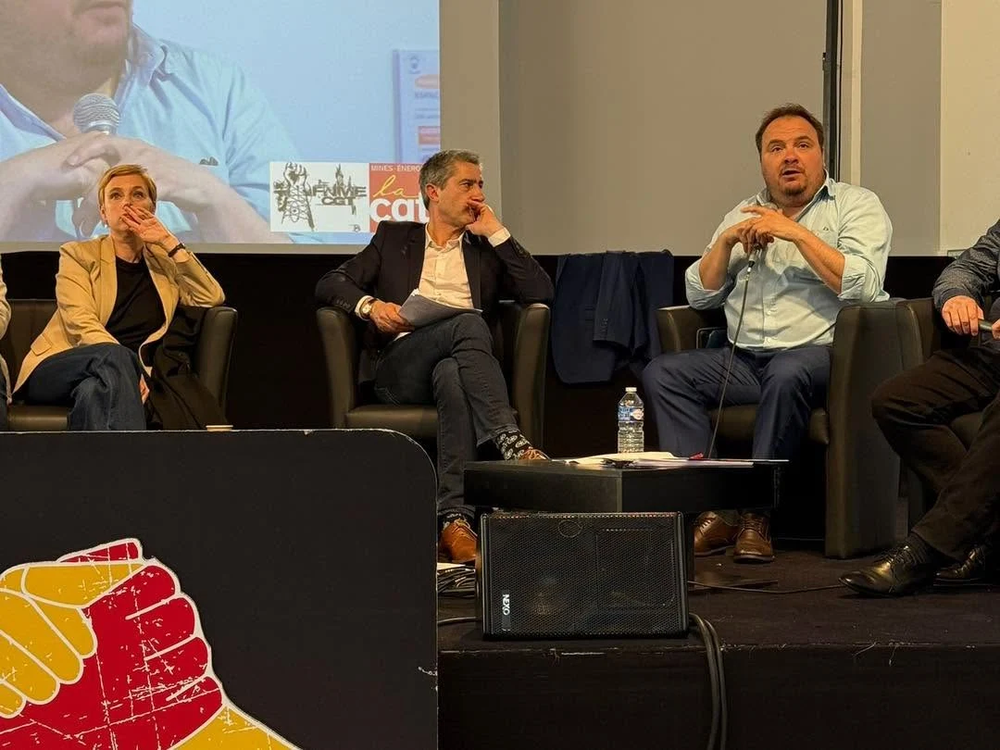

Publication relayée par le PCF 79
Les 80 ans de la nationalisation de l’électricité et du gaz en débat à la CGT
Date de mise à jour indiquée par Facebook · 8 avril 2026
Texte de la publication · Fabien Gay
Débat dans le patio Georges Séguy au siège national de la CGT pour les 80 ans de la loi de nationalisation d’EDF et GDF portée par Marcel Paul.
Nationalisation, marché ou monopole public, mix électrique, nouveau nucléaire et développement des énergies renouvelables, statut des personnels, résolution du conflit avec la Commission européenne sur l’hydroélectricité, tarifs et blocage des prix de l’essence… Pendant deux heures, nous avons échangé avec les représentants de toute la gauche et les syndiqués.
Merci à la FNME et à son secrétaire général, Fabrice Coudour, pour ce débat avec François Ruffin, député de Debout, Clémentine Autain, députée de l’Apres, Maxime Laisney, député de la LFI, Marie-Noëlle Battistel, députée PS et moi, en tant que sénateur communiste.







Sources
Fabien Gay · publication relayée par le PCF 79 · bibliothèque Facebook · AR-0002-FB-00822
À lire aussi · EDF et GDF. Fabien Gay revient sur les 80 ans de la nationalisation